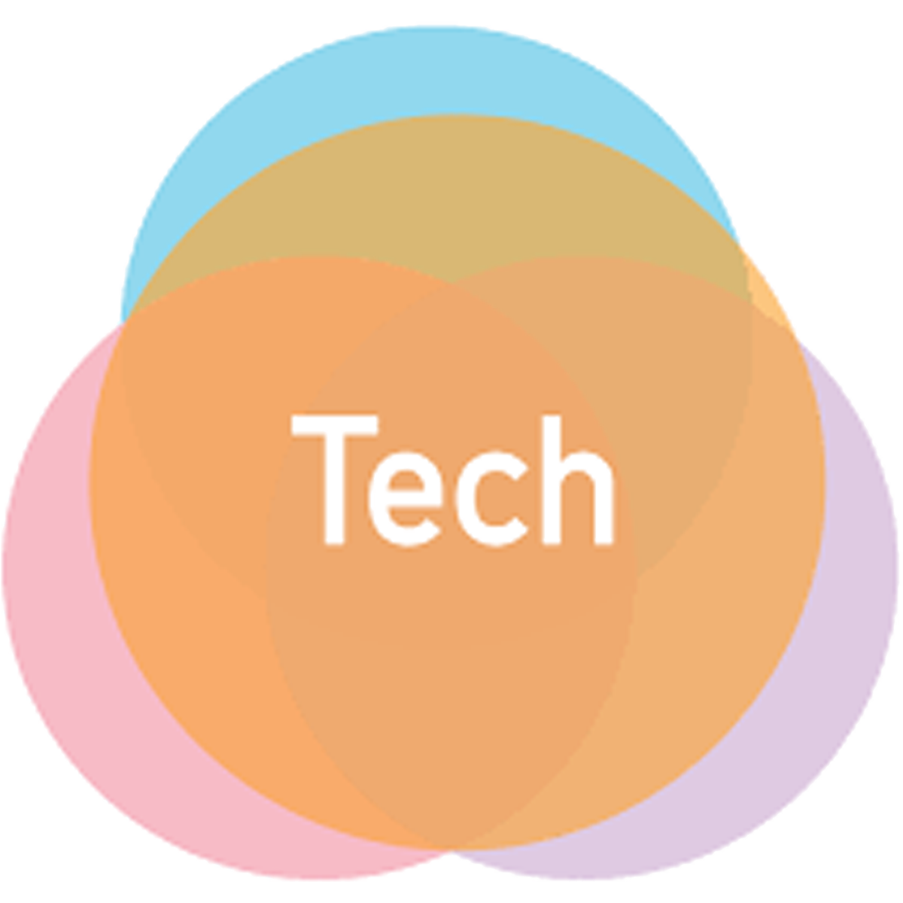

Experience
PASAE Frontend Developer (Webmaster) & Historian
UC Berkeley | May 2023 - Present
- Website redesign project lead; collaborated with a small team of interns to revamp the PASAE website for enhanced aesthetic appeal and functionality to simplify user experience
- Managed historical records and documented key events within the organization
KOSMOS @ Cal Design Lead & Sr. Filming Lead
UC Berkeley | Mar 2022 - Present
> 30+ Video projects on YouTube and Instagram
> Managed and coordinated brand design; designed social media graphics and YouTube and Instagram content
> Conducted training workshops; trained members on videography techniques and Adobe Suite to enhance brand-building
Photographer Portrait & Client Based Photography
Jan 2022 - Present
> Photographed dynamic portraits for 200+ individuals; including dance team and graduation shoots
> Managed shoot logistics; arranged studio lighting setups, edited/delivered polished images, ensured client satisfaction
 AFX Dance Training Team Director
UC Berkeley | Aug 2024 - Dec 2024
> Directed a 52 member dance team
> Coordinated weekly choreography and performance practices for a beginner/intermediate campus-based dancers
> Coordinated production; managed music selection, choreography, and performance scheduling
dowork.ai Machine Learning Engineer Intern
Remote | May 2023 - Sep 2023
> Developed a website parser tool; for a personalized in-browser chatbot assistant
> Created an evaluation framework; to test AI agent accuracy across different models
 Tech+Social Impact Undergraduate ML Research
UC Berkeley | Jan 2023 - Jul 2023> Joined an undergraduate research project that utilized Twitter's API to scrape and analyze online hate speech related to TERF users
 Berkeley Lab Intern — Experiences in Research (EinR)
Berkeley Lab Intern — Experiences in Research (EinR)
Berkeley, CA | Jun 2021 - Jul 2021
> Modeled a solar water heating system; using LBNL's MSWH weather database and algorithms
> Worked 1-on-1 under Milica Grahovac (LBNL Principal Scientific Engineering Associate)
Berkeley Lab Data Science Apprentice
Berkeley, CA | Jul 2020 - Aug 2020
> Developed a gas detection model utilizing an Arduino to analyze toxic gas levels within household environments